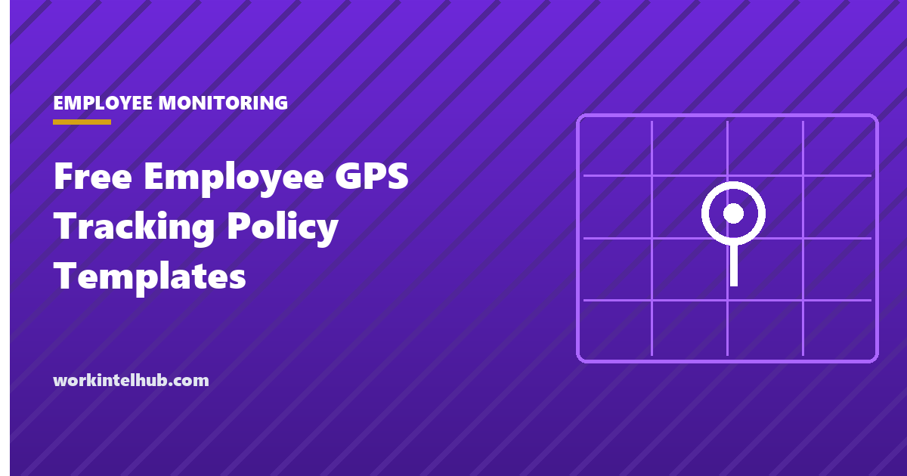

Free Employee GPS Tracking Policy Templates

GPS tracking of employees is lawful in every state on company vehicles and company devices during working hours, with notice. It becomes unlawful, or a lawsuit, at three boundaries: personal devices, hours outside work, and states that require consent for a tracking device on a vehicle. A policy exists to draw those boundaries in writing, to tell employees where they are, and to record that they were told.
The template is a seven-section policy, a consent and acknowledgement form, a register of tracked devices and vehicles with the notice given for each, and a state rule sheet. The employee GPS tracking guide explains the law in depth; this page is the document that applies it.
Download the templates
Free files: Word, Excel and PDF
Three files, free, no email required. Word to edit, Excel to track, PDF to print or share.
Templates open in Microsoft Word, Excel, Google Docs and Sheets, LibreOffice and any PDF reader. Free to use and adapt for your organisation.
What is in the template
- Policy. Seven sections: purpose, what is tracked, when, who sees it and retention, notice and consent, employee rights, misuse.
- Consent and acknowledgement. One form for receipt of the policy and, where a state requires it, consent to collection.
- Register. Every tracked vehicle and device with the notice and consent recorded, and a compliance flag by state.
- State rules and access log. The consent states and the record of every individual-level review.
The three boundaries
Devices. Company vehicles and company devices may be tracked with notice. Personal devices may be tracked only through a work application, only while clocked in, and only with consent; tracking a personal phone outside the app is an intrusion claim in most states. Hours. Tracking outside scheduled hours has no legitimate purpose except theft recovery and is the fact pattern in most GPS lawsuits; the policy switches it off at clock-out and lets employees do the same. Vehicle consent states. California, Texas and Minnesota require the vehicle owner's consent for a tracking device, which is simple for company vehicles (the company consents) and decisive for personal vehicles used for work; New Jersey requires written notice for any vehicle an employee uses.
The monitoring-notice states (New York, Connecticut, Delaware) treat location as electronic monitoring; include it in the notice the laws by state page describes.
Using location data without losing the team
- Dispatch and safety, not surveillance: say what the data is for and stick to it.
- Current location for dispatchers; history only with a reason and a record in the access log.
- Ninety days of retention, then delete; location history is a liability, not an asset.
- Never discipline on location data alone; it says where a device was, not what a person did.
- Give drivers their own data: mileage and route history they can use for their expense reports.
- Pair the policy with the consent form and the monitoring policy so the documents agree.
Key takeaways
- GPS tracking is lawful on company vehicles and devices during working hours with notice; the policy draws the boundaries at personal devices, off-hours and the consent states.
- California, Texas and Minnesota require vehicle owner consent for tracking devices; New Jersey requires written notice; New York, Connecticut and Delaware fold location into the monitoring notice.
- Switch tracking off at clock-out, retain history 90 days, log every individual-level review.
- Register every tracked asset with the notice and consent recorded.
Frequently asked questions
Is it legal to GPS track employees?
Yes, on company vehicles and company devices during working hours, with notice, in every state. Tracking personal devices without consent, tracking outside working hours, and installing a tracking device on a personal vehicle without the owner's consent in California, Texas or Minnesota are where it becomes unlawful or actionable.
Do employees have to consent to GPS tracking?
Notice is sufficient for company vehicles and devices in most states; consent is required for personal devices and personal vehicles, and specifically for tracking devices on vehicles in California, Texas and Minnesota. New Jersey requires written notice for any vehicle an employee uses. The consent form in the download covers both.
Can an employer track an employee after hours?
Not lawfully for any monitoring purpose. Tracking outside scheduled hours is the basis of most GPS privacy claims. The policy switches tracking off at clock-out and limits off-hours use to theft recovery after a report.
How long should location data be kept?
Thirty to ninety days for routine data, then deleted, with longer retention only for a specific claim or investigation. Location history has little operational value after a few weeks and considerable liability.
Can GPS data be used to discipline an employee?
As one piece of evidence with other facts, after the employee has had the chance to explain, yes. On its own, no: location data shows where a device was, not what a person did, and policies should say it is never the sole basis for discipline.